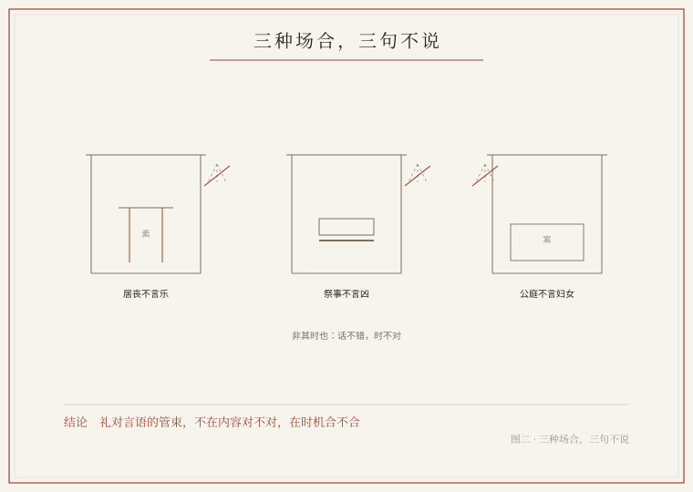

曲礼下 · 二·十六 · 第 139 课
居丧之时不谈乐，祭事之时不谈凶，公庭之上不谈妇女。注「非其时也」。
说什么事：居丧不言乐，祭事不言凶，公庭不言妇女。
落在哪一层：仪，兼及礼意。论什么话在什么场合不能说。
为何编在此位：上节论什么书在什么时候读，此节论什么话在什么场合说。一读一言，同一分寸。
【经】居喪不言樂，祭事不言凶，公庭不言婦女。
【注】非其時也。
【疏】〔此节与上节同疏〕「此一节明行礼各有时之事，各随文解之。」
言 此处非「说出口」，兼含「谈议」与「涉想」。疏以「非其时」为断。
乐 居丧所不言者，非乐器，是乐事。
凶 丧亡之事。祭为吉礼，故不言凶。
公庭 疏「公庭」谓治事之所。非私室。
妇女 所不言者，非无人，是不以之为谈资。
非其时也 注三字，与上节注「为礼各于其时」相承。
居丧的时候不谈乐事，祭祀的时候不谈凶事，公庭之上不谈妇女。
三句三场合，同一道理：有些话本身不错，错在此时此地。礼对言语的管束，不在内容对不对，在时机合不合。
第一层 不言即不夺 居丧者心在哀，若与之谈乐，是以所无夺其所有。不言，是把场子让给当下。
第二层 祭不言凶 祭为吉礼，凶语一入，礼即散。此与「祭事不言凶」的深意，在于保护一个已经立起来的场。
第三层 公庭不言妇女 疏以公庭为治事之所。治事之所论治事，最易滑成闲谈，故礼先堵之。今人以为此句轻贱，古人所重者在「公庭」二字。
第四层 三句的次序 丧、祭、公庭，由重而轻，由私而公。礼的差别不在禁止的多少，在场合的分量。
与今日何干 追悼会上不谈生意，会场里不谈绯闻——今人仍守此三句，只是不自觉其出于礼。
| 左 | 右 |
|---|---|
| 居丧不言乐 | 心在哀，不以所无夺所有 |
| 祭事不言凶 | 吉礼之场，凶语不入 |
| 公庭不言妇女 | 治事之所论治事 |
| 三句皆有「其时」 | 过时则复常 |
| 不言者，非不知 | 知而不言，是分寸 |
| 非其时也 | 与上节「各于其时」相承 |
画三格并置，每格一道门框：第一格门内只画一条下垂的素带（示意丧），格中另有一枚被划去的鼓形小图；第二格门内画一只俎，格中另有一枚被划去的小棺形；第三格门内画一张案，案上无物，格中另有一枚被划去的钗形小图。三格的划去痕迹皆用同一道短斜线。不画人、不写文字。赭色只用在三道短斜线上。
